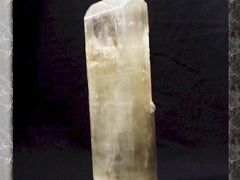

생성원리

정의 Definition
규산염은 금속원소와 다양한 구조를 가진 Si-O사면체(SiO2)가 결합한 화합물로 지각과 상부 맨틀의 90% 이상을 포함하고 있어, 그만큼 광물종도 다양하고 그 존재량도 많습니다. 규산염 중에서 이노규산염은 규산염 광물의 기본 구조 단위인 SiO4사면체의 결합방식이 Si-O 사면체에 산소가 체인모양으로 공유하는 형태로 쇄상 구조형을 띠고 있는 것을 말합니다.
종류 Class
총 6종의 이미지가 있습니다.


이름 (name)
보통 각섬석(common hornblend)
특 성 (characteristics)
- 가) 개요
- 화학조성의 변화범위가 매우 넓은 조암광물 중 하나로, 주상형 결정이 발달하고 쌍정이 나타나기도 한다. 쪼개짐이 87°인 휘석(amphibole)과 달리 보통 각섬석은 56° 혹은 124°를 이뤄 구분된다.
나) 화학식 : (Ca,Na)2-3(Mg,Fe,Al)5(Al,Si)8O22(OH,F)2
(Ca:칼슘,Na:나트륨,Mg:마그네슘,Fe:철,Al:알루미늄,Si:규소,F:불소)
- 다) 산출지 : __, __, 미국(사진좌측부터)
- (주요 생산국가 : 미국 뉴욕, 노르웨이 Ontario, 이탈리아)
라) 물리화학적 성질
| 구분 | 설명 |
|---|---|
| cleavage(쪼개짐) | perfect |
| fracture(깨짐) | 반패각상의 울퉁불퉁한 형태로 발달 |
| color(색) | 갈색, 녹색, 녹갈색, 흑색 |
| density(밀도) | 3.0~3.45 |
| hardness(경도) | 5~6 |
| crystal system(결정계) | 단사정계 |
| luster(광택) | 유리광택 |
| streak(조흔색) | 회록색, 암록색 |
- 마) 용도
- 광물수집가의 표본 광물

이름 (name)
규회석(wollastonite)
특 성 (characteristics)
- 가) 개요
- 칼슘(Ca)을 함유한 규산염 광물로, 미량원소인 철(Fe)과 망간(Mn)이 칼슘과 치환하는 고용체로 존재하며, 이 두 미량원소의 함량에 의해 물리적 성질이 다양하게 변한다. 스카른(skarns) 또는 접촉 변성암의 주된 광물이며, 주로 석회암이 변성작용을 받아 산출된다. 매우 밝고 백색이 대부분이며, 독특한 물리적 특성(저흡수력, 저휘발성)에 의해 요업의 주요한 원료로 이용된다.
나) 화학식 : CaSiO3 (Ca:칼슘, Si:규소, O:산소)
- 다) 산출지 : 미국
- (주요 생산국가 : 중국 길림성·요녕성, 인도, 미국, 멕시코, 핀란드)
라) 물리화학적 성질
| 구분 | 설명 |
|---|---|
| cleavage(쪼개짐) | perfect |
| fracture(깨짐) | splintery, 얇고 길게 늘어진 형태로 깨짐 |
| color(색) | 백색, 노란색, 회색, 갈색 |
| density(밀도) | 2.8~2.9 |
| hardness(경도) | 4.5~5 |
| crystal system(결정계) | 삼사정계 |
| luster(광택) | 유리광택 |
| streak(조흔색) | 흰색 |
- 마) 용도
- 도자기 제조에 중요한 원료이며 페인트 충진제, 플라스틱, 고무제품 등에도 쓰이고 최근에는 석면 대체재로도 각광받고 있다.

- 
이름 (name)
리티아휘석(spodumene)
특 성 (characteristics)
- 가) 개요
- 리튬(Li)과 알루미늄(Al)을 함유한 휘석류의 규산염 광물로, 운모와 같은 단사정계이며, 거정질 화강암(pegmatite)에서 주로 산출된다.
나) 화학식 : LiAlSi2O6 (Le:리튬, Al:알루미늄, Si:규소, O:산소)
- 다) 산출지 : __, 아프카니스탄, 멕시코(사진좌측부터)
- (주요 생산국가 : 브라질, 미국, 아프카니스탄, 마다가스카르, 파키스탄)
라) 물리화학적 성질
| 구분 | 설명 |
|---|---|
| cleavage(쪼개짐) | perfect |
| fracture(깨짐) | splintery, 얇고 길게 늘어진 형태로 깨짐 |
| color(색) | 회백색, 보라색, 노란색, 갈색 |
| density(밀도) | 3.1~3.2 |
| hardness(경도) | 6~7 |
| crystal system(결정계) | 단사정계 |
| luster(광택) | 유리광택~무염 |
| streak(조흔색) | 흰색 |
- 마) 용도
- 리튬(Li)의 주된 원광이고, 리치아휘석 중 분홍색을 띠는 쿤자이트(kunzite)는 보석으로 이용된다. 리튬(Li)은 합금, 유리, 윤활제, 촉매제, 원자로 등의 원료로 이용된다.
이름 (name)
장미휘석(rhodonite)
특 성 (characteristics)
- 가) 개요
- 망간(Mn) 성분이 풍부한 준휘석류로, 판상·주상의 결정형을 보이며 장미색을 띠는 삼사정계의 규산염 광물이다. 망간이 다량으로 함유된 변성암과 변성교대작용에 의한 퇴적암에서 주로 산출된다.
나) 화학식 : (Mn,Fe,Mg,Ca)SiO3
(Mn:망간, Fe:철, Mg:마그네슘, Ca:칼슘, Si:규소, O:산소)
- 다) 산출지 : __, 아르헨티나, 멕시코(사진좌측부터)
- (주요 생산국가 : 러시아 우랄산맥, 스웨덴, 미국 뉴저지, 브라질)
라) 물리화학적 성질
| 구분 | 설명 |
|---|---|
| cleavage(쪼개짐) | perfect |
| fracture(깨짐) | 고르지 않은 uneven한 형태로 표면이 부서짐 |
| color(색) | 분홍색, 장미색, 흑색 |
| density(밀도) | 3.4~3.68 |
| hardness(경도) | 5.5~6.5 |
| crystal system(결정계) | 삼사정계 |
| luster(광택) | 유리광택 |
| streak(조흔색) | 흰색 |
- 마) 용도
- 망간(Mn)의 소규모 광석, 장식용 돌, 준보석류 광물
이름 (name)
투각섬석(tremolite)
특 성 (characteristics)
- 가) 개요
- 각섬석(amphibole)에 속하는 규산염 광물로, 깃털형태 또는 침상의 결정이 관찰되며, 석면(asbestos)으로 사용되었다. 석영(quartz), 백운석(dolomite)이 함유된 암석이 접촉변성작용을 받아 산출되는 연속적인 광물계열 중 하나이다.
나) 화학식 : Ca2Mg5Si8O22(OH)2
(Ca:칼슘, Mg:마그네슘, Si:규소, O:산소, OH-:수산화기)
- 다) 산출지 : 미국, __, __(사진좌측부터)
- (주요 생산국가 : 미국과 캐나다에서 고루 산출, 이탈리아, 스위스)
라) 물리화학적 성질
| 구분 | 설명 |
|---|---|
| cleavage(쪼개짐) | perfect |
| fracture(깨짐) | 고르지 않은 uneven한 형태로 표면이 부서짐 |
| color(색) | 흰색, 무색, 갈색, 회색 |
| density(밀도) | 2.9~3.4 |
| hardness(경도) | 5~6 |
| crystal system(결정계) | 단사정계 |
| luster(광택) | 유리광택 |
| streak(조흔색) | 흰색 |
- 마) 용도
- 최근까지 석면(asbestos)으로 사용되어 왔으나, 석면가루가 인체에 흡수되면 석면침착층, 폐암, 후두암 등의 치명적인 원인이 되어 사용이 금지되고 있다. 석면은 탁월한 내열성과 화학적 반응성이 거의 없는 비전도체의 천연물질로, 내열재, 방음재, 섬유·종이제품 등 다양하게 활용되어 왔다. 지금은 광물표본에 한정되어 사용되고 있으며, 녹색계열의 투각섬석 중 연옥(nephrite)은 공예품, 장신구로 활용되기도 한다.
이름 (name)
보통 휘석(augite)
특 성 (characteristics)
- 가) 개요
- 휘석(pyroxene)의 고용체(solid solution) 중 하나인 규산염 광물로, 보통 각섬석(hornblend)과 유사하나 쪼개짐이 약87° , 2방향이며, 굴절률도 차이를 나타내어 구분할 수 있다. 반려암(gabbro), 현무암(basalt)과 같은 화성암, 높은 단계의 염기성 변성암에서 산출된다.
나) 화학식 : (Ca,Na)(Mg,Fe,Al,Ti)(Si,Al)2O6
(Ca:칼슘,Na:나트륨,Fe:철,Al:알루미늄,Ti:티탄,Si:규소,O:산소)
- 다) 산출지 : 미국
- (주요 생산국가 : 미국 콜로라도·뉴욕, 독일, 이탈리아, 프랑스)
라) 물리화학적 성질
| 구분 | 설명 |
|---|---|
| cleavage(쪼개짐) | perfect |
| fracture(깨짐) | 패각상, 매우 brittle하게 조각난 형태로 발달 |
| color(색) | 녹색, 밝은 갈색, 흑색, 갈녹색 |
| density(밀도) | 3.3~3.5 |
| hardness(경도) | 5.5~6 |
| crystal system(결정계) | 단사정계 |
| luster(광택) | 유리광택~무염 |
| streak(조흔색) | 회록색 |
- 마) 용도
- 광물표본으로 이용